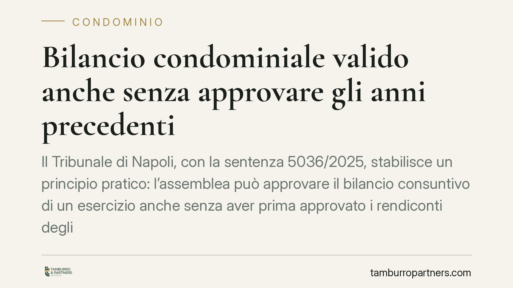

Bilancio condominiale valido anche senza approvare gli anni precedenti
Il Tribunale di Napoli, con la sentenza 5036/2025, stabilisce un principio pratico: l'assemblea può approvare il bilancio consuntivo di un esercizio anche senza aver prima approvato i rendiconti degli anni precedenti. La decisione interessa amministratori e condomini che spesso si trovano con approvazioni arretrate bloccate. Vediamo cosa cambia e quando esiste un limite.

Il caso deciso dal Tribunale di Napoli
Un condomino aveva impugnato la delibera di approvazione del bilancio consuntivo, sostenendo che fosse invalida perché l'assemblea non aveva prima approvato i rendiconti degli esercizi precedenti. In sostanza, secondo la tesi contestata, esisterebbe un ordine vincolante: nessun bilancio nuovo senza aver chiuso i conti arretrati.
Il Tribunale di Napoli, Sezione VI Civile (giudice De Luca), con la sentenza 5036/2025 del 21 maggio 2025, ha respinto questa impostazione. Ogni esercizio ha autonomia propria: l'assemblea può deliberare validamente sul bilancio dell'anno in corso a prescindere dallo stato di approvazione dei rendiconti precedenti.
Inquadramento normativo
Il rendiconto condominiale è disciplinato dall'art. 1130-bis del Codice civile, introdotto dalla riforma del 2012 (legge 220/2012). La norma indica il contenuto del rendiconto - registro di contabilità, riepilogo finanziario e nota sintetica esplicativa - ma non impone alcuna sequenza vincolante tra gli esercizi.
L'approvazione del bilancio rientra poi tra le competenze dell'assemblea ai sensi dell'art. 1135, comma 1, n. 2, c.c. Anche qui il legislatore non prevede che l'approvazione di un esercizio sia condizionata a quella degli anni anteriori.
Principio cardine resta l'autonomia dei singoli esercizi. Ogni annualità contabile ha vita propria: i debiti e i crediti che derivano da esercizi passati, se non ancora definiti, possono essere riportati nel bilancio successivo, ma la mancata approvazione di un rendiconto pregresso non paralizza l'attività deliberativa futura.
Un limite esiste solo quando il regolamento condominiale di natura contrattuale - quello cioè accettato da tutti i condomini e trascritto, non il semplice regolamento assembleare - introduca espressamente un divieto o un vincolo di sequenza. In tal caso la clausola contrattuale prevale e va rispettata.
Implicazioni pratiche
Per l'amministratore, la pronuncia conferma che la presenza di rendiconti arretrati non ancora approvati non costituisce di per sé un ostacolo alla convocazione dell'assemblea per approvare il consuntivo dell'anno. L'attività gestionale può proseguire senza restare ostaggio di contenziosi o ritardi relativi a esercizi passati.
Per i condomini, la decisione riduce il margine per impugnazioni basate sul solo argomento dell'ordine cronologico delle approvazioni. Chi intende contestare un bilancio dovrà individuare vizi concreti - errori contabili, violazioni procedurali, difetto di trasparenza - e non limitarsi a eccepire la mancata chiusura degli anni precedenti.
Attenzione, però, a un punto: la validità dell'approvazione non cancella le partite ancora aperte. I conti degli esercizi non approvati restano da definire e possono generare contestazioni autonome. Approvare il bilancio di un anno non significa aver sanato le posizioni arretrate.
Resta inoltre decisiva la verifica del regolamento. Se quello in vigore è di natura contrattuale e contiene clausole sull'ordine delle approvazioni, la regola generale affermata dal Tribunale di Napoli cede il passo alla previsione pattizia.
Cosa fare in concreto
- Verificate la natura del regolamento condominiale: controllate se sia contrattuale o assembleare e se contenga clausole che vincolino la sequenza delle approvazioni di bilancio.
- Procedete all'approvazione del consuntivo annuale anche in presenza di rendiconti arretrati, salvo il divieto espresso di cui sopra, tenendo distinte le singole annualità.
- Tenete traccia delle partite pregresse: riportate con chiarezza nel bilancio successivo debiti e crediti derivanti dagli esercizi non ancora approvati.
- Documentate con precisione registri, riepilogo finanziario e nota esplicativa, come richiede l'art. 1130-bis c.c., per ridurre il rischio di impugnazioni fondate su vizi di merito.
- Valutate con un professionista l'opportunità di regolarizzare gli esercizi arretrati, che restano una questione aperta anche dopo l'approvazione del bilancio corrente.
La sentenza offre un criterio operativo utile a sbloccare situazioni di stallo, senza però autorizzare a trascurare le posizioni contabili rimaste in sospeso.
---
Contributo informativo a cura di Tamburro & Partners - Avv. Giuseppe Tamburro. Non costituisce parere legale.
Ogni condominio ha una storia a sé.
Se gestisci un'amministrazione e vuoi un confronto su una specifica questione condominiale, scrivi allo studio. Ti rispondiamo entro un giorno lavorativo.